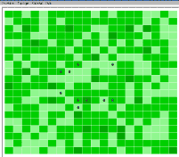

|
Mobe
Modélisation de l'Organisation de la filière
Bois-Energie
Martine Antona, Cirad.

Le modèle MOBE ( Modélisation de l'Organisation de la
filière Bois-Energie) est destiné à explorer et simuler
la mise en uvre des instruments des politiques
forestières et environnementales. Le cas étudié est
celui des politiques de gestion du bois-énergie au
Sahel.
Au Niger, depuis la fin des années 80 et au Mali
depuis 1995, plusieurs règles de gestion ont été
progressivement instaurées et ont contribué à créer de
nouvelles institutions. Des marchés ruraux du bois
fonctionnent à l'échelle des terroirs villageois pour
coordonner les acteurs de la filière et se substituent,
sur certains terroirs, à l'organisation très atomisée
des échanges. L'accès aux espaces de production et les
modalités d'usage du bois sont régulés au travers
d'instruments de gestion : quotas d'exploitation par
zone et fiscalité incitative.
Le modèle s'intéresse aux processus qui amènent, du
fait de ces règles et institutions, les différents
acteurs de la filière, paysans-bûcherons, transporteurs
et consommateurs, à adapter leurs modalités d'action et
d'exploitation du bois-énergie. Ces évolutions peuvent à
moyen ou plus long terme modifier ces institutions et
règles mises en place. La modélisation utilise le
formalisme des systèmes multi-agents pour représenter
les interactions entre des acteurs hétérogènes et une
ressource forestières multi-usages. Deux types
d'interactions sont représentées dans le modèle :
- des interactions directes représentées par les
échanges de bois entre acteurs de la filière, de
d'exploitant au consommateur.
- des interactions indirectes entre acteurs via
l'exploitation d'une ressource commune.
L'objectif du modèle est de considérer le rôle de
l'hétérogénéité des acteurs, des processus de décision
et du mode d'organisation des échanges de bois sur
l'efficacité économique et environnementale des
instruments mis en uvre.
Le modèle stylisé comprend un scénario de référence,
qui simule l'exploitation du bois et ses échanges au
sein de la filière, sans instruments de gestion. La
grille spatiale de Cormas est utilisée pour représenter
un écosystème de type brousse mixte, support de deux
ressources, le bois vert sur pied et le bois mort.
L'échelle choisie est celle d'une forêt villageoise de
4000 ha.
Deux configurations spatiales de l'exploitation sont
introduites (diffuse ou groupée). Un scénario zonage et
quotas et un scénario fiscalité simulent le
fonctionnement des instruments de gestion et leurs
effets sur l'évolution des deux ressources, sur la
configuration de l'espace exploité et sur la dynamique
économique aux divers stades de la filière. Les
simulations sont effectuées sur une durée de 30 ans pour
chaque scénario et comparées entre elles. Trois critères
d'évaluation des scénarios sont étudiés : - la viabilité
ressource à long-terme au moyen de l'évolution du stock
de bois mort et de bois vert - les flux de production
dans la filière : production, demande des transporteurs,
quantités consommées - les prix moyens et les marges aux
divers stades.
Vous pouvez télécharger le modèle (zip, 6 ko).
Pour en savoir plus, téléchargez le DEA de Martine ou
contactez-la par Email Martine Antona
|